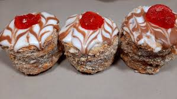
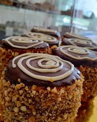

¿Que es?
- Los alfajores de hojaldre son una variedad de alfajor tradicional que se elabora con masa de hojaldre, en lugar de la masa más común tipo “galletita” o “bizcocho” que se usa en los alfajores clásicos..